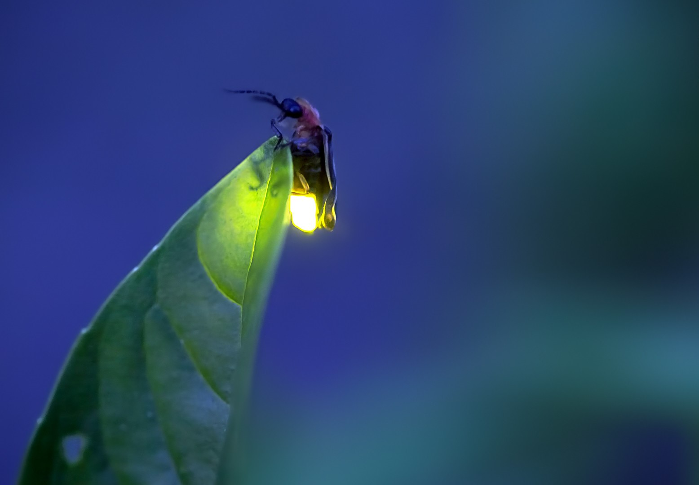

Firefly

Biology
⁂ Fireflies have a large amount of variation in their general appearance, with differences in color,
shape, size, and features such as antennae.
⁂ Adults can differ drastically in size depending on the species, with the largest being up to 25 mm (1 in) long.
⁂ Although the females of some species are similar in appearance to males, larviform females are
found in many firefly species.
⁂ These females can often be distinguished from the larvae only because the adults have compound eyes, although
the latter are much smaller than those of their males and often highly regressed.
⁂ The most commonly known fireflies are nocturnal, although numerous species are diurnal.
⁂ Most diurnal species are not luminescent; however, some species that remain in shadowy areas may produce light.
Light and chemical production
⁂ Light production in fireflies is due to a type of chemical reaction called bioluminescence.
⁂ This process occurs in specialized light-emitting organs, usually on a firefly's lower abdomen.
⁂ The enzyme luciferase acts on the luciferin, in the presence of magnesium ions, ATP, and oxygen to produce light.
⁂ Gene coding for these substances has been inserted into many different organisms (see Luciferase – Applications).
⁂ The genetics of firefly bioluminescence, focusing on luciferase, has been reviewed by John Day.
⁂ Firefly luciferase is used in forensics, and the enzyme has medical uses – in particular, for detecting
the presence of ATP or magnesium.
⁂ All fireflies glow as larvae.
⁂ In lampyrid larvae, bioluminescence serves a function that is different from that served in adults.
⁂ It appears to be a warning signal to predators, since many firefly larvae contain chemicals that are distasteful or toxic.